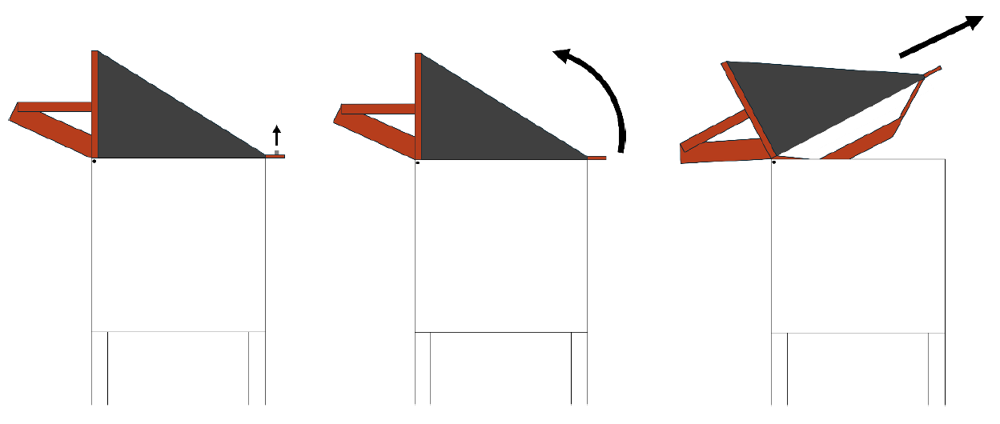

Prototype Operation & Maintenance
Table of Contents
1.1 Standard Operating Procedure
1.2 Changing the Roller Gap
2. Prototype Maintenance
2.1 Regular Maintenance
2.2 Replacing the chain
2.3 What if the machine jams?
1 Prototype Operation
1.1 Standard Operating Procedure
- Put a bucket underneath the crusher. Place it as high up as possible by stacking bricks under it.
- Throw in the glass through the chute. Avoid putting in too much at a time.
- Slowly turn the crank. If there is a noticeable resistance buildup, do not force the crank further. Instead, rotate it backward a bit, then go forward again. It might be necessary to repeat this multiple times. If this does not solve the issue, refer to the section What if the machine jams?.
- Once all the glass has been crushed, the bucket can be removed.
1.2 Changing the Roller Gap
The design was originally conceived in a way that allows the roller closest to the crank to be moved back and forth. The idea was that by adjusting the roller gap, different sizes of glass could be crushed and produced. Doing so involves the following steps:
- Loosen chain guides 1 & 2 (see Figure 1).
- Loosen the four bolts that are used to fasten the roller’s bearing brackets to their respective platform. The two bolts on the drivetrain side can be difficult to access; using an L-shaped hex socket wrench with a long shaft is recommended.
- Move the roller to adjust the gap from wide to narrow or vice versa.
- Refasten the bearing bracket bolts.
- Slide the chain guides downwards to put tension on the chain. Make sure the chain is in contact with the plastic sleeves and fasten the chain guides.
- Pull on the chain to check if it is not too loose, then turn the crank to make sure that there is not too much tension either. If necessary, readjust.
IMPORTANT NOTE: The wider setting ultimately proved to be completely ineffective at crushing intact glass bottles—the sole reason it was included as a design feature in the first place; hence, the glass crusher ended up being used exclusively on the narrowest setting. The usefulness and effectiveness of the wider setting is thus not guaranteed.

2 Prototype Maintenance
2.1 Regular Maintenance
Grease the chain and sprockets as needed to ensure a smooth operation.
At some point, it might additionally be necessary to replace one of the two 520 motorcycle chains or the chain guide sleeves. To do so, proceed as follows:
- Loosen chain guides 1 & 2 (see Figure 1) and slide them upwards.
- With the chain tension removed, the chain or the chain guide sleeves can be removed and replaced.
- After the replacement is done, slide the chain guides back downwards to put tension on the chain. Make sure the chain is in contact with the plastic sleeves and fasten the chain guides.
- Pull on the chain to check if it is not too loose, then turn the crank to make sure that there is not too much tension either. If necessary, readjust.
2.2 Replacing the chain
At some point, it might be necessary to replace one of the two 520 motorcycle chains. To do so, proceed as follows:
- Loosen the two cylinders (see Figure 1) so that they can slide upwards.
- With the tension removed, remove the chain. Now is a good time to check if the plastic sleeves around the tubes are still in an acceptable condition. If not, replace them. Put on the new chain.
- Slide the tubes back downwards to put tension on the chain, make sure the chain is in contact with the plastic sleeves, and fasten the two screws.
- Pull on the chain to check that it is not too loose, then turn the crank to make sure that there is not too much tension. If necessary, readjust.
2.3 What if the machine jams?
If something jams the machine, it usually suffices to reach into the crusher and remove the piece that is causing the jam by hand. Make sure that no other person is using the crusher in the meantime. If possible, firmly hold the crank with your free hand to make sure the rollers do not start moving on their own.
If the issue is not solvable by reaching in through the top, the top structure is designed to be removable. To do so, proceed as follows:
- Remove the screw nut at the back.
- Rotate the top upwards. Lifting it off the screw requires a bit of force.
- Once rotated, slide it off the two pins at the front and the top has been successfully removed.

To put it back, follow the same procedure in reverse:
- Place the front of the top into the crusher and slide it onto the two pins.
- Rotate the top’s back downwards. Fitting the screw into the slit requires a good amount of force. It can be helpful to put a finger around the screw and pull it backwards.
- Put the nut back onto the screw.